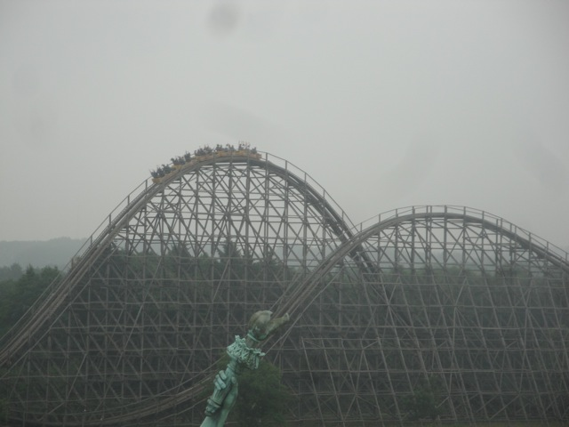
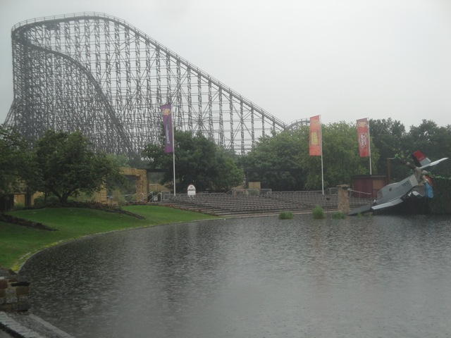
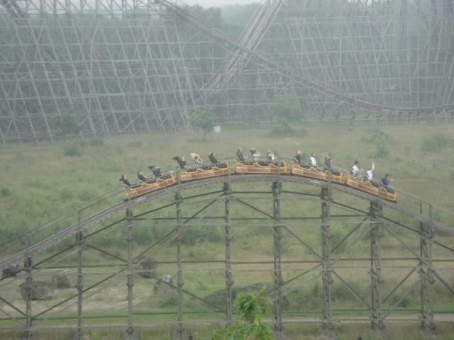
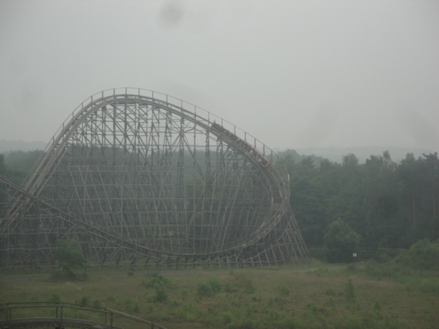
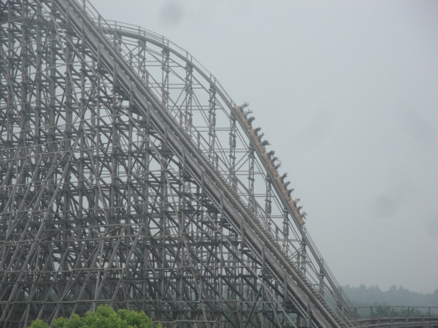
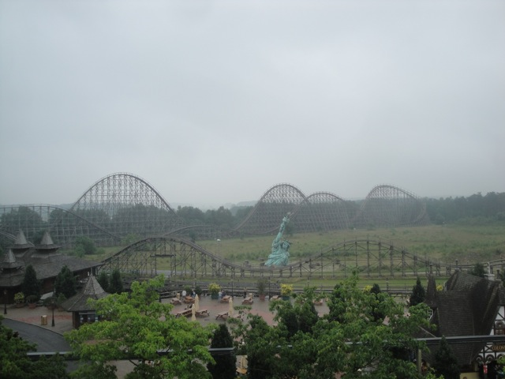
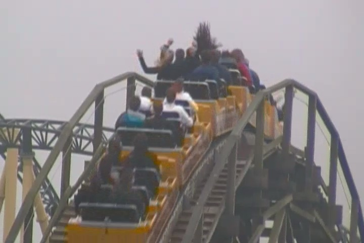
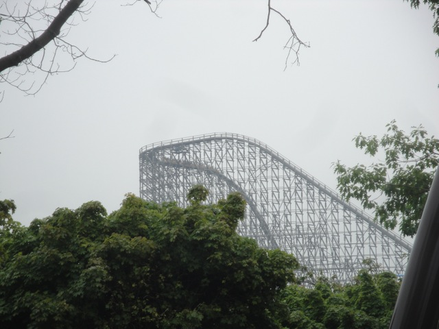

| |
Colossus Review

We're here at Heide Park and today, we're going to be reviewing Colossus. The park's wooden coaster and one of the best wooden coasters on the planet. It may not be too big of a surprise since it is a massive wooden coaster and I think now that Son of Beast is (rightfully) gone, it's one of the biggest wooden coaster on the planet. And it's easy to see why. Just look at it. And just hearing that this thing is one of the few Intamin Pre-Fab wooden coasters in the world, that alone raises our expectations, because yeah. Intamin Pre-Fabs are f*cking amazing. And this thing is certainly no exception. All right. Let's not waste any more time, get in the seats, pull down the lap bar, and away we go. We climb up the massive lifthill, and thanks to the cable lift, you won't be hearing the traditional clank clank clank you're used to on most roller coasters. Well that was fast. We've reached the top, head around a turn, get a great view of absolutely nothing since the surrounding area is nothing but feild and then we see it. The first drop. And down we go. We just FLY down this first drop. Speed pouring on. We are going FAST!!! And trust me when I say, that this ride puts its speed to good use. We then rise up into the 2nd airtime hill, which is still bigger than the vast majority of other wooden coasters, including some of my favorites. And yeah. You get some good airtime at the top. You don't slow down at all. You just fly over the hill and out of your seat. This is great. We then head into a slightly smaller, but still massive airtime hill that again, kicks our ass and provides some really nice ejector air. We rise into another large hill, get some mild airtime, but not much. And then we head down the curved drop. That curved drop has some nice laterals and is just a really fun element. We then head into this sort of curved hill that looks really cool. But unfortunetly, it doesn't have any airtime or laterals. So yeah. This is the breather point of the ride. Oh, and I forgot to mention. Everything so far has been smooth as glass. Yes, there's a tiny little vibration here and there, so it's not quite as butter smooth as the other Pre-Fabs, but it is still one of the smoothest wooden coasters in the world. We then head down a drop, still flying fast and shred through this tiny little hill that has no airtime. Yeah, we're still in the breather section. Aww, I want the crazy airtime back. We then rise up a small hill, and BAM!!! Ejector air!!! After that, we shred through some straight track and into a downward helix. The laterals here are a little weak, but we're still having fun. And now comes the grand finale and the strongest part of the ride. Three airtime hills with some INSANELY strong airtime. I mean, you just FLY OUT OF YOUR SEAT. The airtime is just insane and easily the strongest part of the ride. And finally, we head around a curve with some decent laterals as we glide into the brake run. And yeah. Colossus is an AWESOME coaster. It never loses its speed, has some crazy ejector air, and for a wooden coaster, it's smooth as glass. There may be a vibration here and there, but COME ON!!! While it's not quite as good as its Pre-Fab siblings, El Toro and Balder, it's still an amazing wooden coaster and one of the best in the world. So yeah. Definetly make sure you ride it if visiting Heide Park. It's part of a rare breed, and not only the best ride in Heide Park, but one of the best in the world.
9/10
Location: Heide Park
Opened: 2001
Built by: Intamin
Last Ridden: June 27, 2012

Collosus Photos







Home
|